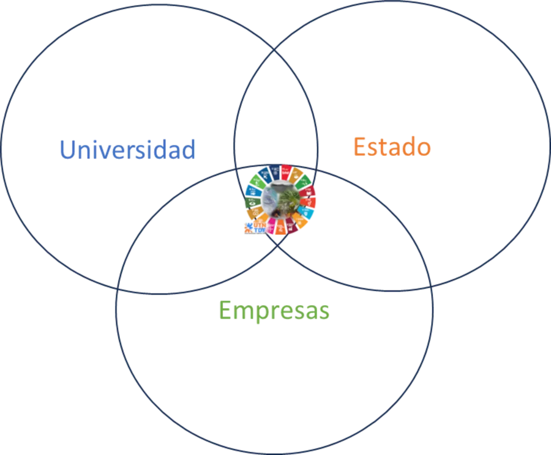
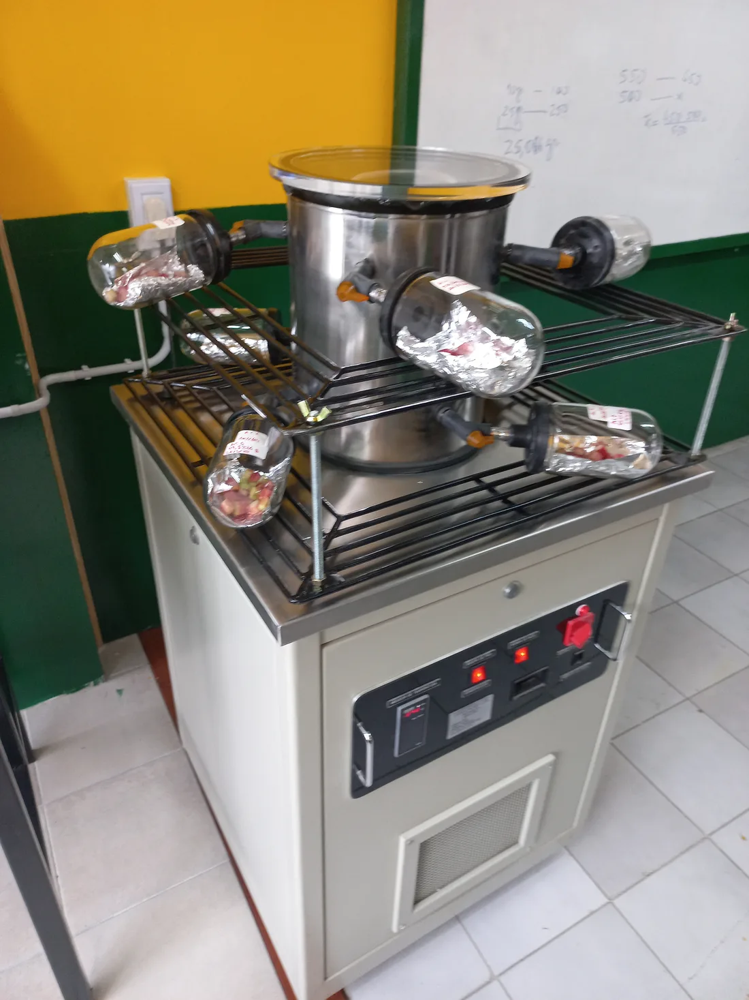
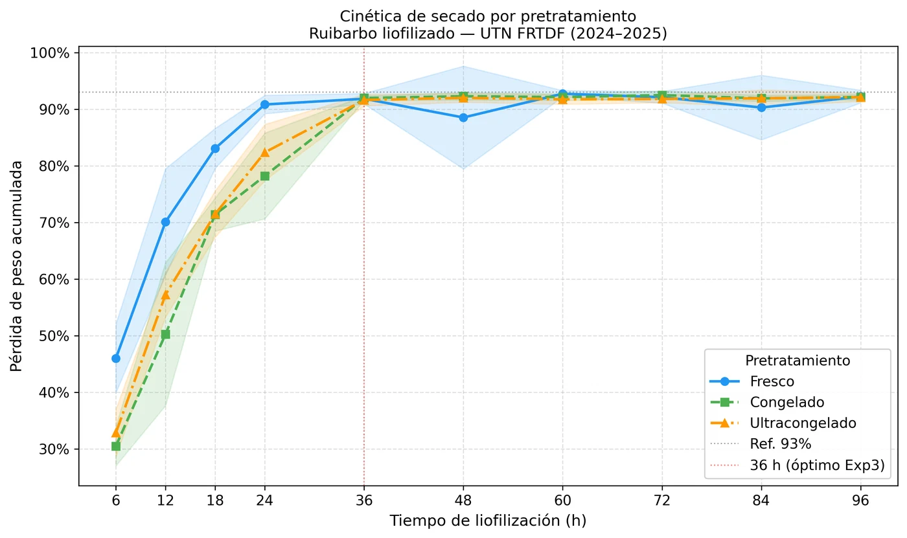

Grupo de I+D+i · UTN Facultad Regional Tierra del Fuego
Ciencia aplicada desde el fin del mundo
Química Aplicada al Ambiente, los Alimentos y el Desarrollo Sostenible
Investigamos cómo agregar valor a los recursos de Tierra del Fuego con soberanía alimentaria y uso sustentable del ambiente, mientras formamos ingenieras e ingenieros en investigación.
El grupo
Quiénes somos
QA3DS reúne a docentes, graduados y estudiantes de Ingeniería Química, Pesquera, Industrial y Electromecánica de la UTN FRTDF en torno a problemas concretos de la provincia más austral del país.
Uso sustentable de los recursos naturales patagónicos y soporte técnico para la gestión ambiental.
Tecnologías de conservación que agregan valor a la producción local y regional.
Soberanía alimentaria, economía local y transferencia al sector socioproductivo fueguino.
Misión
Contribuir al conocimiento y al avance científico en Tierra del Fuego mediante investigación, desarrollo e innovación en áreas estratégicas —soberanía alimentaria, uso sustentable de recursos naturales, ambiente y desarrollo sostenible—, formando recursos humanos de calidad en ingeniería.
Visión
Ser referente regional en I+D+i para la toma de decisiones en gestión de recursos, referente técnico para oportunidades de mercado local y fuente de conocimiento para startups y empresas de base tecnológica.

Valores
- Responsabilidad social y ambiental
- Vocación por la innovación
- Excelencia académica para la formación profesional
- Cooperación y trabajo interdisciplinario
- Honestidad y confiabilidad
- Ética, responsabilidad y capacidad de trabajo
- Valentía para aceptar nuevos desafíos
Proyecto de investigación · PID PP9884
Liofilización de alimentos de producción local en Tierra del Fuego
La liofilización quita el agua de un alimento congelado por sublimación, al vacío y sin pasar por el estado líquido. El resultado es un producto liviano y estable que conserva buena parte de su estructura y sus propiedades, una tecnología que todavía no se había aplicado a la producción fueguina.
El proyecto busca generar el conocimiento técnico para que productoras y productores locales puedan sumar valor a sus materias primas, abrir mercados y fortalecer la soberanía alimentaria de la provincia. Además, estudia la factibilidad de escalar el proceso a planta piloto.
- Título
- Análisis del proceso de liofilizado aplicado a alimentos de producción local/regional en la Provincia de Tierra del Fuego
- Código
- PID PP9884 · UTN PIDPP
- Inicio
- Abril de 2023
- Estado
- En ejecución · prorrogado
- Dirección
- Ing. Pesq. Ariel Luján Giamportone
- Sede
- UTN FRTDF · laboratorio en Río Grande
Cómo funciona
El proceso de liofilización, paso a paso
- Temperatura del producto
- 20 °C
- Presión en la cámara
- 760 mmHg
- Masa de la muestra
- 50 g
Esquema simplificado. La animación dura segundos; en nuestros ensayos el ciclo completo lleva entre 36 y 48 horas. Abrir en modo presentación →
Matrices de estudio

Ruibarbo
Peciolos provenientes de una huerta doméstica de Río Grande y de Estancia Viamonte, cortados en trozos de ~1 cm. Es la matriz con la que se completaron todos los ensayos experimentales del proyecto.
Salicornia
Planteada en la propuesta original; queda como posible línea para un próximo proyecto.
Erizo de mar
Relevamiento bibliográfico realizado; posible línea para un próximo proyecto.
Resultados
Qué aprendimos con el ruibarbo
Comparamos tres pretratamientos (fresco, congelado y ultracongelado) con tres repeticiones en tres meses distintos, pesando muestras en diez tiempos de liofilización.
- La curva tiene dos fases: la pérdida de agua es rápida durante las primeras 24 h y luego se estabiliza en una meseta, con más del 92 % de pérdida de peso.
- El pretratamiento importa al principio y no al final: a las 24 h el ruibarbo fresco seca más rápido (Kruskal-Wallis, p = 0,0004), pero a las 36 h y 48 h los tres pretratamientos son estadísticamente equivalentes.
- Los resultados son reproducibles: el mes del ensayo no tuvo un efecto significativo (ANOVA, p = 0,10) y el modelo explica el 92 % de la variabilidad.
- El pre-congelado da una cinética más predecible: el modelo de Page ajusta con R² > 0,91 en congelado y ultracongelado, contra 0,76 en fresco.
El ciclo de 36 h surgió de un ensayo con una sola repetición. Con el dataset compilado, la meseta se detecta a las 48 h en las muestras congeladas y a las 72 h en las frescas; por eso el rango práctico que recomendamos es de 36 a 48 h.

Trayectoria
Del grupo al laboratorio
- 2021Nace QA3DSConstitución del grupo en la UTN FRTDF; definición de misión, visión y líneas de trabajo.
- Nov 2022Capacitación en CADIC-CONICETPrimer contacto práctico con un liofilizador RIFICOR LT-8 en Ushuaia.
- Abr 2023Comienza el PID PP9884Se conforma el equipo docente y la primera cohorte de estudiantes investigadores.
- Oct 2023Jornadas de Ciencia y Tecnología UTN FRTDFPresentación pública del grupo y del proyecto.
- Dic 2023Primer ensayo de liofilizaciónRuibarbo de una huerta de Río Grande; humedad inicial de 94,3–94,6 % en base húmeda.
- May 2024Segundo ensayo, con ruibarbo de Estancia ViamontePrimera curva de secado sistemática con ocho frascos.
- Oct 2024Capacitación interna y tercer ensayoGuía de uso rápido del liofilizador y protocolo de pesada mejorado.
- Nov 2024 – Feb 2025Diseño experimental compiladoTres pretratamientos × tres repeticiones × tres meses × diez tiempos.
- Mar 2025Prórroga del proyectoDisposición 1/2025 de prórroga del PID PP9884.
- 2025Estudio de escalado y divulgaciónFactibilidad de una planta piloto; charla en la Semana del Ambiente del Municipio de Río Grande.
- Mar 2026Análisis estadístico, tablero de datos y preprintAnálisis reproducible publicado en GitHub y manuscrito científico en preparación.
- 2026Vinculación con productoresComparación del liofilizado con el secado tradicional junto a una productora local.
Equipo
Las personas detrás del proyecto
Un equipo interdisciplinario de docentes investigadores y estudiantes de grado de la UTN FRTDF.
Estudiantes y graduados investigadores (2025)
- Angélica CárcamoIng. Química (graduada) · Beca BINID
- Matías Iván ÁlvarezIng. Química · Beca BINID
- Facundo Nicolás GutiérrezIng. Química
- Emanuel Luciano Silva NaveasIng. Electromecánica · Beca BINID
- Ricardo Antonio HerediaIng. Electromecánica · Beca BINID
- Gabriel Fernando CostillaIng. Pesquera
- Jorge Rojas FloresIng. Pesquera
Vinculación
Con quiénes trabajamos
Estancia Viamonte
Materia prima y entorno productivo real en las cercanías de Río Grande.
CADIC-CONICET
Capacitación inicial en el uso del liofilizador (Ushuaia).
IIByT (CONICET-UNC)
Análisis de actividad de agua por sorción dinámica de vapor.
CIATI
Análisis microbiológico y rotulado nutricional.
ICTA (FCEFyN-UNC)
Asistencia técnica en evaluación sensorial.
UTN FRTDF
Secretaría de Ciencia y Tecnología: financiamiento y marco institucional del PID.
Producción y difusión
Publicaciones, presentaciones y recursos
- 2026Cinética de liofilización de ruibarbo patagónicoManuscrito científicoEn preparación
- 2026Repositorio abierto del PID PP9884Datos, notebook de análisis, figuras, protocolos y código del tablero interactivoDisponible
- 2025Liofilización de alimentos localesCharla de divulgación · Semana del Ambiente · Municipio de Río GrandePresentado
- 2025Liofilización: conservando el futuro alimentario de Tierra del FuegoArtículo de divulgación · revista La LupaRedactado
- 2025Química aplicada al ambiente, los alimentos y el desarrollo sostenible: investigando la liofilización en Tierra del FuegoArtículo de divulgación · revista La LupaRedactado
- 2025Pósteres institucionales del grupo QA3DSPID y Colegio de IngenierosPresentado
- 2024Capacitación en el uso del liofilizadorCurso interno de 4 h y guía de uso rápidoDictado
- 2023Presentación del grupo QA3DS y del PIDJornadas de Ciencia y Tecnología · UTN FRTDFPresentado
Contacto
¿Querés trabajar con nosotros?
Si sos productor o productora, integrás una institución o sos estudiante de la UTN FRTDF y te interesa sumarte, escribinos por cualquiera de estos canales.